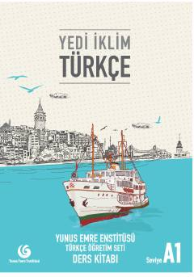

YİTurk tilini o'rganuvchilar uchun mo'ljallangan asosiy darajadagi darslik.
Yunus Emre Enstitüsü tomonidan tayyorlangan ushbu darslik turk tilini chet tili sifatida o'rganuvchilar uchun mo'ljallangan. Kitob o'quvchilarga kundalik hayotda zarur bo'lgan asosiy muloqot ko'nikmalarini, grammatika qoidalarini va lug'at boyligini bosqichma-bosqich rivojlantirishga yordam beradi.